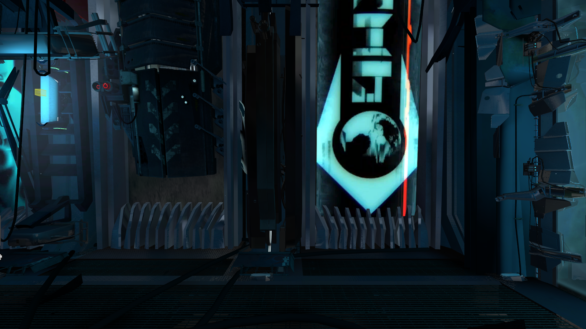
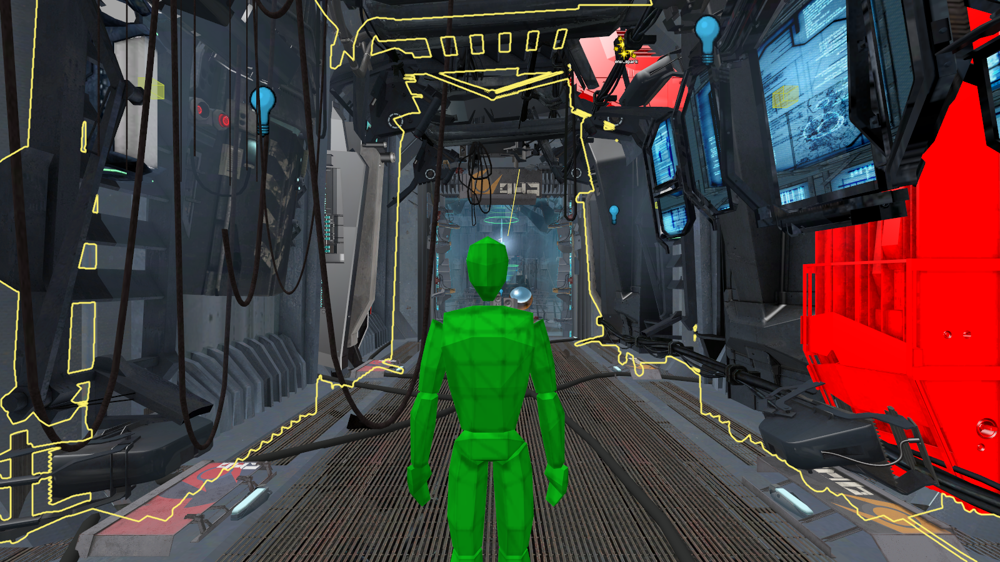

NoDraw
NoDraw is a high-performance, 64-bit standalone level editor for the Source Engine and Garry's Mod, engineered from the ground up in Rust on top of WebGPU (wgpu).
Designed as the direct successor to Hammer++ and Valve's legacy Hammer Editor, NoDraw removes decades of 32-bit MFC legacy constraints from 1998. It eliminates out-of-memory crashes on dense scenes and introduces modern level design workflows: real-time physical lighting previews, subpixel anti-aliased stencil outlines, precise Havok physics collision visualization, procedural displacement modifier stacks, and built-in BSP lump packing.
gameinfo.txt search paths, and mount.cfg mounts. The editor requires no game DLL replacements or engine hooks. All maps saved by NoDraw remain 100% compliant with standard Source SDK compilers (vbsp, vvis, vrad).
- 1 Overview & Core Architecture
- 2 Interface & Workspace Layout
- 3 Brush & Mesh Modeling (CSG, Carve, Extrude, Bevel)
- 4 Shapes & Primitive Generators
- 5 Displacements & Terrain (Sculpting, Modifier Stack)
- 6 Splines & Path Tool
- 7 Lighting: 162-ray Halton Lightbake
- 8 Material Editor & Texturing
- 9 Engine Shaders (Water Refraction & 2D Skybox)
- 10 Selection Stencil & .PHY Collision Pipeline
- 11 Entity I/O & Connection Graphs
- 12 Automation: Propper, Lump 40 Pack, Sprinkle
- 13 In-Editor Playtest Mode (F6)
- 14 Online Collaborative Editing (WIP)
- 15 Model Context Protocol (MCP) AI Integration
- 16 Hammer++ vs NoDraw Specification
- 17 Keyboard Shortcuts
- 18 Download & Installation
1. Overview & Core Architecture
Valve's Hammer Editor was historically bound to 32-bit Windows MFC architectures, limiting memory allocation to 3.2 GB and causing frequent crashes on complex scenes with high polygon and entity counts.
Key architectural advantages of NoDraw:
- Memory Safety (Rust): Guaranteed memory safety through compile-time ownership semantics. Eliminates pointer corruption, buffer overflows, and crashes during vertex manipulation.
- WebGPU Hardware Acceleration: Low-overhead Vulkan and DirectX 12 command queues deliver a sustained 60+ FPS across hundreds of thousands of brush polygons and dense dynamic prop arrays.
- Deterministic Undo Transactions: Every editor action is recorded in transactional trees, enabling instantaneous undo/redo operations without risk of state drift or file corruption.
2. Interface & Workspace Layout
The user workspace is designed for maximum geometric clarity:

- Left Tool Strip: Direct access to Selection, Zoom, Camera, Block, Polygon, Mesh, Clip, Displacements, Path Splines, Entities, Decals, Overlays, and Sprinkling.
- Right Inspector (Tool / Properties / Details): Deep parameter management for solids, displacements, boolean cutters, snapping grids, and 3D transform gizmos.
- Bottom Assets Explorer: Instant indexing across thousands of VMT materials, MDL models, sounds, and particles with live search and drag-and-drop texture assignment.
 3. Brush & Mesh Modeling
3. Brush & Mesh Modeling
NoDraw bridges the gap between classic BSP brush construction and contemporary polygon modeling:
- Non-Destructive Boolean CSG
- Supports
Union,Difference, andIntersectoperations. Cutters remain stored in an editable parameter stack until explicitly baked, allowing adjustments to wall openings and archways without destructive cuts. - Smart Carve
- Replaces Hammer's legacy Carve tool. Carves openings using clean radial wedges around holes, ensuring strictly convex, BSP-compliant brushes without generating degenerate geometry.
- Mesh Operations: Extrude, Inset & Bevel
- Direct face manipulation: extrude faces along surface normals or custom directional deltas; inset face perimeters; bevel brush edges with configurable radius and segment subdivisions.
- Vertex Editing with UV Lock
- Edit vertices and edges in 2D and 3D views while automatically maintaining texture projection axes across untouched faces.
 4. Shapes & Primitive Generators
4. Shapes & Primitive Generators
Procedural generation of complex architectural volumes:
- Standard Volumes: Parametric boxes, wedges, cylinders, cones, spikes, and geodesic spheres.
- Arches & Toruses: Configurable inner/outer radii, wall thickness, radial subdivisions, and sweep arcs from 0° to 360°.
- Staircase Generators: Linear steps along designated axes or parametric Spiral Stairs with customizable turns, step height, and inner radius.
5. Displacements & Terrain Sculpting
Advanced terrain sculpting built on Source Engine displacements:
- Interactive Sculpting Brushes
- Sculpt displacement surfaces in real time using
Raise,Lower,Smooth,Relax,Flatten,Noise,Inflate, andSmudgebrushes with smooth radial falloffs. - Non-Destructive Modifier Stack
- Stack parametric procedural modifiers evaluated on top of the displacement base:
HeightSmooth,SurfaceSmooth,Terrace(stepped landforms),Erosion(hydraulic/gravity simulation),Strata(geological rock layers),Noise,Bend,Twist, andTaper. - Auto-Sew Seams & T-Junctions
- Automatic detection and welding of adjacent displacement edges, resolving cracks, tears, and vertex seams between differing power levels.
- Slope-Based Alpha Blending
- Automatically paints
WorldVertexTransitionmaterials according to normal slope: steep cliffs receive rock textures, while flat ground transitions to grass or dirt.
6. Splines & Path Tool
Construct complex curved structures via Bezier splines:
- Terrain Shaping: Carve roads, water channels, mountain ridges, and trenches through existing displacements.
- Profile Sweeping: Extrude ribbons of geometry along curves to generate road surfaces (
strip), cliff walls (wall), curbs, pipes, and tunnels (cut). - Prop Distribution: Scatter models (fence posts, street lamps, trees) along curves with defined spacing, height offsets, and rotational jitter.
 7. Lighting: 162-ray Halton Lightbake
7. Lighting: 162-ray Halton Lightbake
Calculates physically grounded lighting directly within the editor:

- 162 Halton Rays per Vertex: Evaluates hemispherical quasi-random Halton (2, 3) samples per vertex to compute sky occlusion and indirect light bounce.
- Quadratic Spotlight Attenuation: Strict implementation of Source SDK 2013
ComputeLightAtPointsequations with smooth cosine transitions between inner and outer cones. - Strict LDR Pipeline: Operates without soft-shoulder compression, preserving deep shadows and authentic high-contrast lighting matching VRAD compiler output.
8. Material Editor & Texturing
- High-Speed Material Indexing: Indexes over 100,000 VMT materials across mounted VPKs and game directories in 1–2 seconds.
- Shader Inspection: Native parsing of
LightmappedGeneric,VertexLitGeneric,WorldVertexTransition,Water, andSpriteparameters. - Face Edit Controls: Precision texture placement with Fit, Justify, Shift, Scale, and Rotate options across World and Face coordinates.
- Utility Materials: Rapid application of
tools/toolsnodraw,tools/toolsclip,tools/toolstrigger,tools/toolshint, andtools/toolsskip.
 9. Engine Shaders (Water Refraction & 2D Skybox)
9. Engine Shaders (Water Refraction & 2D Skybox)
- Source Water Shader: Executes real screen-space refraction (
refract: true), surface ripples, Fresnel reflections, and exponential volumetric depth fog governed by$fogstartand$fogend. - Seamless 2D Skybox: Mathematical continuity across all 12 cubemap edges (MSE = 0.0), eliminating zenith pinching and horizon alignment seams.
- Sprite & Entity Rendering: Unlit + Translucent rendering without non-linear alpha distortion, removing dark rectangular artifacts around light bulbs and sprites.
10. Selection Stencil & .PHY Collision Pipeline

- Subpixel Stencil Silhouette Outline: A two-pass screen-space shader renders models into an
R8Unormmask and applies a 12-tap radial bilinear filter with parabolic alpha falloff. Produces smooth golden silhouettes (#f5c518) while keeping surface textures clear. - Precise .PHY Collision Pipeline: Reconstructed Havok/IVP compact surface parser with corrected spatial transformations
[z·M, -x·M, -y·M]and coplanar edge elimination (hiding interior diagonals on flat faces where normal dot product > 0.985).
11. Entity I/O & Connection Graphs
- Visual Connection Inspector: Review all entity outputs, targeted entities, input actions, parameters, and firing delays.
- Strict Typo Prevention: Targetname selectors automatically list valid entities matching class criteria.
- FGD Parser: Fully parses Valve FGD files for Half-Life 2, Counter-Strike: Source, Team Fortress 2, and Garry's Mod.
 12. Automation: Propper, Lump 40 Pack, Sprinkle
12. Automation: Propper, Lump 40 Pack, Sprinkle
- Integrated Propper Tool: Convert brush assemblies directly into static prop models (
prop_static) using StudioMDL, with customizable surface properties, mass, smoothing angles, and convex physics hulls ($concave). - Lump 40 Packfile (VIDE Replacement): Automatically analyzes map dependencies and writes missing textures, models, sounds, and particles directly into the compiled BSP pakfile.
- Sprinkle Tool: Procedurally scatters props (e.g. foliage, pebbles, urban debris) over selected surfaces with slope constraints, height thresholds, and random yaw.
13. In-Editor Playtest Mode (F6)
Evaluate sightlines, scale, and navigation instantly without compiling:
- Press F6 to enter a first-person player controller with gravity, collision detection, jumping (Space), and crouching (Ctrl).
- Toggle noclip flight via V or N with flight speeds up to 800 units/second via Shift.
14. Online Collaborative Editing (WIP)
Enables concurrent multi-user level design over standard TCP or relay servers with synchronized edits, teammate cursor frustums, and conflict isolation.
15. Model Context Protocol (MCP) AI Integration
NoDraw embeds an official Model Context Protocol (MCP) server listening on localhost:47823:
- Enables external AI coding assistants to inspect map geometry, query entities, sculpt displacements, place props, and execute automated quality assurance passes directly via standardized RPC tool calls.
16. Hammer++ vs NoDraw Specification
| Capability | Hammer++ | NoDraw |
|---|---|---|
| Architecture & Core | MFC / C++ 2003 (32-bit legacy constraints) | Rust + WebGPU (64-bit memory-safe architecture) |
| Prop Silhouette Selection | 1-pixel aliased binary mask | 12-tap Subpixel Anti-Aliased Stencil Outline |
| Physics (.PHY) Display | Obscures model with dense internal wireframes | Coplanar edge filter (clean geometric hulls) |
| Lighting Preview | Basic OpenGL approximation / VRAD wait | 162-ray Halton Lightbake in real-time |
| Packfile Compilation | Requires external VIDE / bspzip tools | Built-in Lump 40 injection in one step |
| Instant Walkthrough | Requires full BSP compilation (F9) | Instant F6 Playtest with noclip and player physics |
| Terrain Modification | Standard destructive displacement vertex edits | Non-destructive modifier stack & Auto-Sewing |
| AI / Scripting Protocol | None (closed binary) | Embedded MCP Server (Model Context Protocol) |
17. Keyboard Shortcuts
| Shortcut | Editor Action |
|---|---|
| F6 | Toggle real-time in-editor Playtest mode |
| V / N | Toggle Noclip flight mode during Playtest |
| Ctrl + Alt + G | Go to Coordinates (supports console setpos / setang strings) |
| Ctrl + G | Group selected objects |
| Ctrl + U | Ungroup selected group |
| Alt + S | In-context 3D Skybox editing (isolates skybox at 1:1 scale) |
| Esc | Immediately cancel active background compilation processes |
| Ctrl + O | Open map file (.vmf / .bsp) |
| Ctrl + S | Save active map document |
18. Download & Installation
NoDraw is distributed as an independent, portable ZIP package for authorized beta testers:
| Distribution Package Specifications | |
|---|---|
| Archive Name | nodraw-beta-tester.zip |
| File Size | 17.5 MB (Compressed ZIP) |
| Build Date | 2026-11-03 |
| Package Contents | NoDraw.exe (Release x64), icons/ (1154 items), plugins/ (light_shader), README.txt |
| Direct Download | Download NoDraw Beta (.ZIP) |
Quickstart Setup
- Extract
nodraw-beta-tester.zipinto any local directory (e.g.D:\NoDraw). - Verify that the
icons/andplugins/folders reside alongsideNoDraw.exe. - Launch
NoDraw.exe. No installation or administrative elevation required. - NoDraw automatically searches Steam registry paths and
libraryfolders.vdfto link Garry's Mod content. For custom folder setups, configure via Settings → Game Folder. - Open a map by pressing Ctrl + O or dragging a
.vmffile directly into the application window.